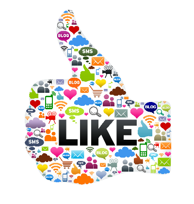

Overview
Social media is an up and coming part of media today. Its popularity has grown immensely among young people because it creates a place for them to share their thoughts, images, adventures, questions, and many other things that they want to communicate with others or their friends. It is entertaining and enjoyable, and very easy to navigate in most cases. The most popular social networking platforms amongst young people today are Facebook, Twitter, Snapchat, and Instagram. Each one has components and features that distinguishes it from another, and that is why most people have their "favorite" of the four.
Although I will only be focusing on four social media platforms, there are so many more such as YouTube, Reddit, LinkedIn, Whatsapp, and Skype. Most of these networks, whether you use them or not, probably sound very familiar to you. Social media can be used for many different reasons that, most of the time, benefit the user. For example, LinkedIn is a network that is designed to help connect business and career professionals. It is ideal for people trying to build connections in their field of work or looking for potential business partners and has several other benefits for users. WhatsApp is an app used to send messages to any part of the world free of charge. This is beneficial for people wanting to keep in touch with friends and family while they're in different countries without having to worry about phone bills and fees.
The four platforms I am focusing on are, in my opinion, the most frequently used by my friends and the students that surround me at Florida State University. As I explained earlier, different social media sites can be used for different reasons. Many of the popular ones in my community are used just to have fun and connect with your friends around you or your friends in different places or at different schools. In the article "Social Media Use in 2018", the author describes that over 78% of 18-24 year olds use Snapchat, and a majority of them use it several times a day. As for Instagram, 71% of Americans in this same age group use Instagram, and almost half of them are Twitter users. Facebook and YouTube are the two platforms that are most popular amongst all age groups.
Shown below is a table of Social Media Usage by Gender. The information was formed from a survey by Google.
| Male | Female | |
|---|---|---|
| Snapchat | 46.6% | 66.7% |
| 35.9% | 34.9% | |
| 57.6% | 47.7% | |
| 51.9% | 67.9% | |
| Google+ | 44% | 40.3% |
| 9.0% | 45.4% | |
| Total: | 468 | 532 |
Social media influences various facets of our world today. Here's are some of them.
- Social Media's impact on Politics
- Political campaigns are now using social media more and also are helping to create influential social organizations among groups that were once very marginalized.
- Social Media's impact on Society
- Now instead of only a few people having the power to inform us of issues, the masses of people on social media lead to news getting out quicker and spreading faster. But the problem is, while this brings awareness to societal issues, does it actually facilitate real change?
- Social Media's impact on Commerce
- Companies now find it important to communicate with their customers through at least one social media platform to generate insights, simulate demands, and create targeted product offerings.
- Social Media's impact on the World of Work
- Lots of employers use social networking to find information about potential new employers and will use the information found to decide whether or not they are equipt for the positions.
- Social Media's impact on Traning and Development
- People who expand their skills in the latest and greatest of social media advances and skills are more likely to be employed.
- Social Media's impact on Personal Relationships
- Social media can motivate people to form "fake" friendships, because they lack the connection that you get face to face. If you've never met someone in real life, are they actually your friend?
Social media can have negative effects too. Some of them include:
- Cyberbulling
- Lack of Privacy
- Depression and Anxiety
- Fear of Missing Out
- Unrealistic Expectations
- General Addiction
Social media has already grown so much. Think about when the most used sites were MySpace, Photobucket, Flickr, Friendster and more. There used to be no such thing as Snapchat or Instagram. But will Instagram and Snapchat even exist in 25 years? Or will they fade away like some of the first social media platforms that were introduced into the media? There are are many possibilites of what could become, and I think the world, as well as myself, is excited to see how social media evolves and surpasses our expecations, or how it self-destructs.